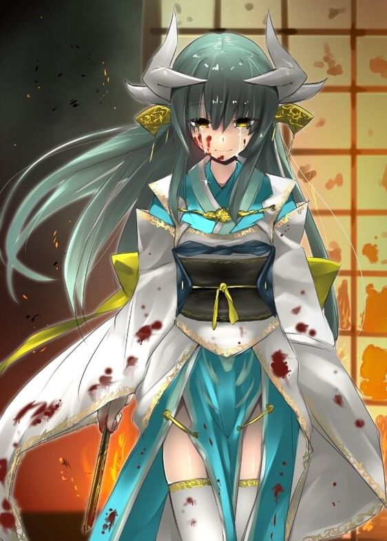
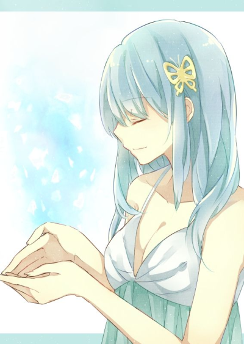
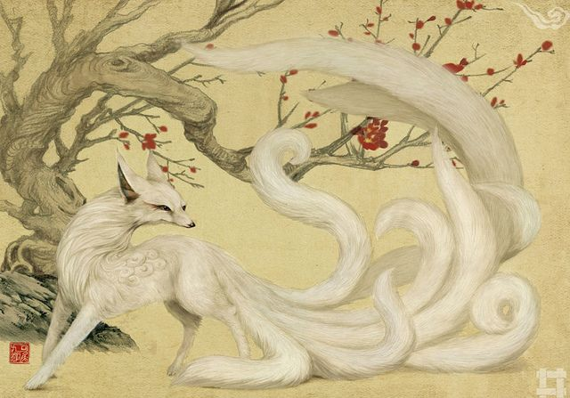

Présentation des membres de l'équipe :
Nous sommes 3 étudiants en 2ème année d'étude à Efrei Paris (Ecole d'ingénieur en informatique). Dans ce projet, nous avons décidé de vous faire découvrir, à travers ce site web, la myhtologie japonaise avec ses Yo-kai ! Nous espérons qu'à la fin de votre visite sur notre site, vous aurez appris plein de nouvelles choses à propos de ces étranges créatures et que vous aurez apréciés certaines d'entre-elles :D ! Pour vous donner une idée, nous allons chacun vous dévoiler notre Yo-kai préféré ! ;p
- Sébastien Touret

Rôle : Recherce d'informations sur certains Yo-kai (Hakuja-no-Myojin, Tamamo-no-Mae, Kiyohime, Osakabehime, Kijyo Koyo, Yamanba, Yuki Onna, Yamata-no-Orochi); Codage de la page "A vous de jouer"; et des articles confiés.
 - Ambroise de Wattripont
Rôle : Recherce d'informations sur certains Yo-kai (Neko-Mata, Basan, Wani, Bakeneko, Bakedoro, Oni, Tengu, Gashadokuro, Futakuchi, Onna, Tatsu, Tanuki, Tsukumogami ); Recherche d'idées de questions pour le quiz. Codage des articles confiés.
 - Gabrielle Girard
Rôle : Recherce d'informations sur certains Yo-kai (BAKU, HO-OH, KAPPA, KYUBI NO KITSUNE, KAMA ITACHI, KIRIN ); codage de la page "Accueil", "A propos"; "Illustration"; "Decouverte"; "A vous de jouer"; Codage des articles confiés.
